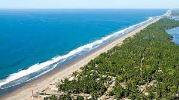

El Salvador es un pequeño paraíso tropical de 321 kilómetros de costas en el Océano Pacífico, en los cuales se ubican casi un centenar de playas, algunas de ellas muy conocidas por turistas nacionales y extranjeros.
Es interesante también conocer que se puede cruzar toda la costa salvadoreña en unas 5 ó 6 horas por medio de la Carretera del Litoral, la cual conecta con todas las playas descritas en este sitio. En este trayecto los visitantes pueden deleitarse con impresionantes vistas del Océano Pacífico y encontrarán diversos restaurantes con frescos y exquisitos frutos del mar, como ostras, conchas, langostas, camarones, pescados, calamares, pulpos, caracoles y más.
Sin duda alguna vale la pena conocer todas las playas de El Salvador.